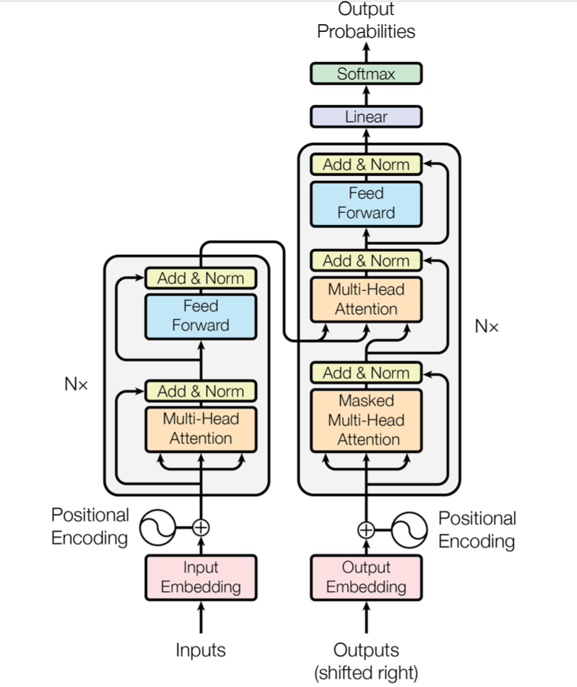
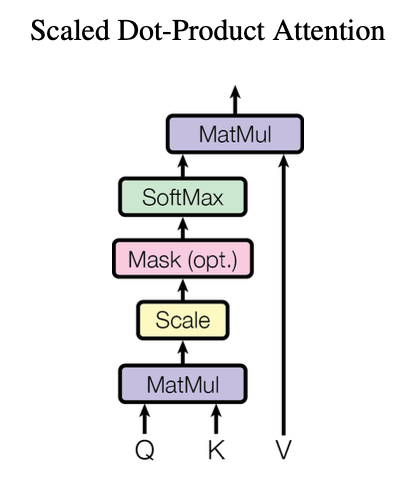
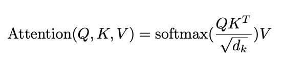
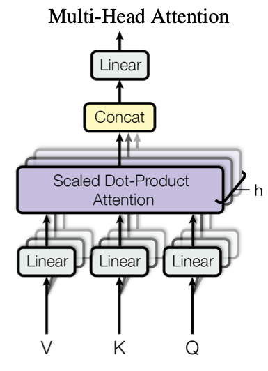
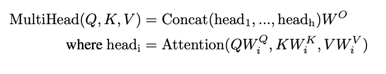
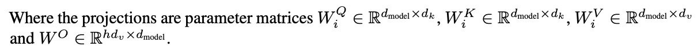
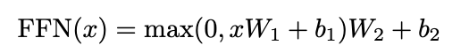
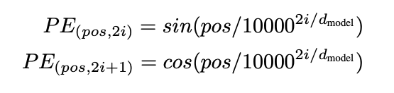

Transformer 遵循了Encoder-Decoder 架构:
Encoder将input sequence 的 symbol representation 与 latent variable, continuous representations $z$ 进行mapping.
Encoder由$N = 6$个相同的layer组成, 每一个layer由两个sub-layers. 第一个sublayer是一个multi-head self-attention 机制, 第二个sublayer是一个简单的全连接向前网络. 每一个sublayer都添加了残差链接(residual Connection), 并在后面添加了Normalisation.
所以, 对于每一层sublayer来说, output为$LayerNorm(x + Sublayer(x))$, 其中 $Sublayer(x)$ 表示了各个sublayer自己的输出.
在paper中, 作者将所有sublayer和embedding layer 的输出维度设置为了 $dim_{model} =512$.
Decoder 也由$N = 6$层相同的layer构成. 每一个layer除了包含在encoder中的两个sublayer, 还添加了第三层sublayer. 第三层sublayer用来对于encoder stack的output进行multi-head attention.
与encoder类似, 进行了残差链接(residual connection)以及layer normalisation.
对Self-attention sublayer进行了一些修改(output embedding offset by one position), 来确保对于position $i$ 的预测只依赖于已知的, 小于 $i$ 的position.
Attention函数可以理解为将query和一系列 Key-Value pairs mapping到output, 其中query , key, value 和 output 都是 vectors.
Output 由对values进行加权求和(weighted sum)得到, 而权重通过compatibility function使用query 和 key 进行计算获得.

在paper中的attention模型, Scaled Dot-Product Attention中, input中的Q(Query)和K(Key)有维度$d_k$, V(Value) 有维度 $d_v$.
实际使用中, 对于多个queries是进行同时计算的, 组成 matrix $Q$, 此时attention的output为:

理论上这两个的复杂度相似, 但实际上dot-product attention更快, 因为可以将运算压缩为矩阵乘法, 而这种计算方式是高度优化过的.
当$d_k$较大时, dot-product 的量级(magnitude)会变得很大, 使softmax获得的gradient极小, 所以paper中使用了 $\frac{1}{\sqrt{d_k}}$进行scaling.

Paper中


$W$代表了投影矩阵
在sublayers中包含的 Feed-Forward Networks, 对于每一个位置分别进行了全连接向前 propagation.

原因:
Paper中使用了sine 和 cosine进行编码

$pos$ 表示位置, $i$ 表示维度. 每一个维度的位置编码对应了一个sin值.